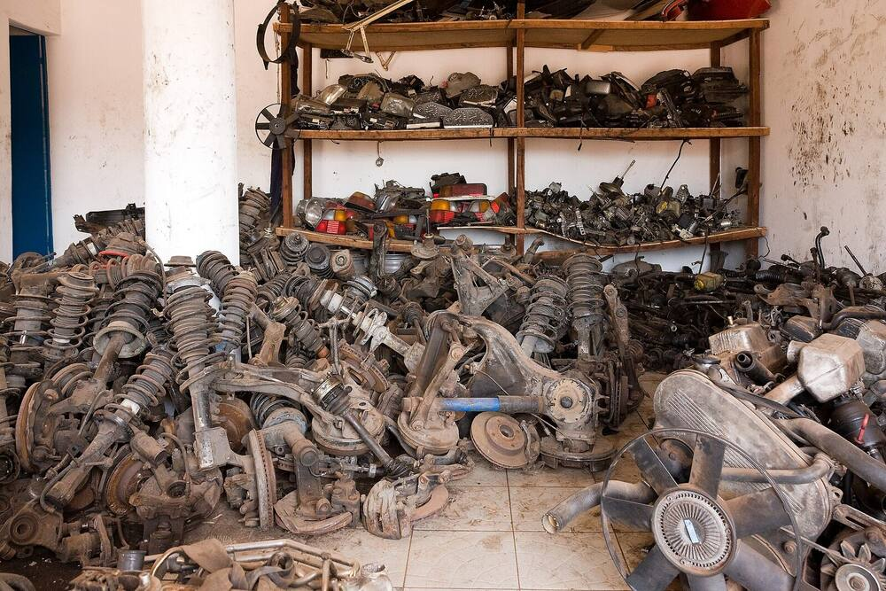

{ AgroParts }
Para a usina não comprar a peça que ela já tem.


O sistema diz que a peça não existe.
Na prateleira,
havia três.
Cinco passos, em segundos
1Recebe código, nome ou foto
2Lê as medidas e o tipo da peça
3Procura as parecidas no catálogo
4Compara uma a uma
5Junta os cadastros, sem apagar o original472477FORN-152